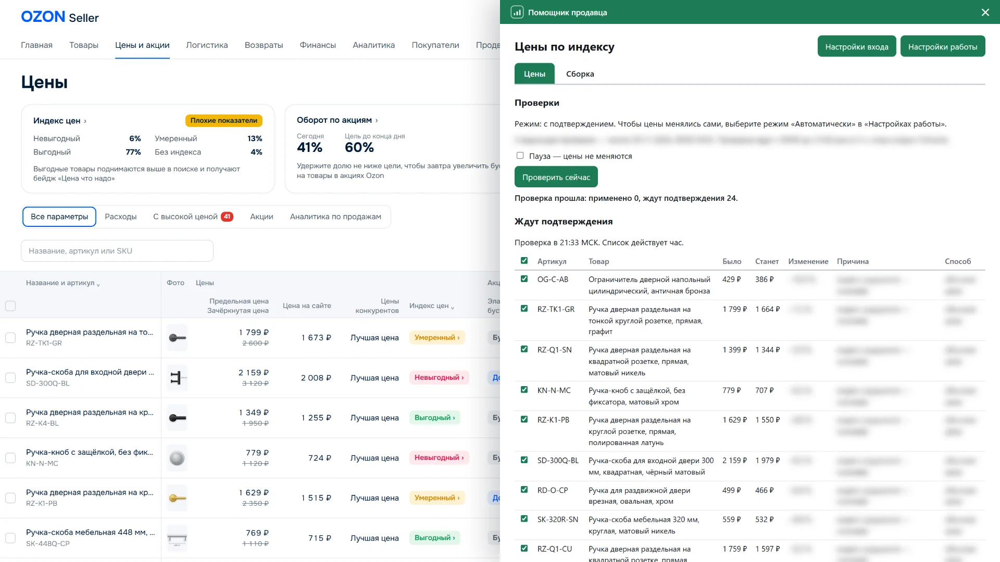
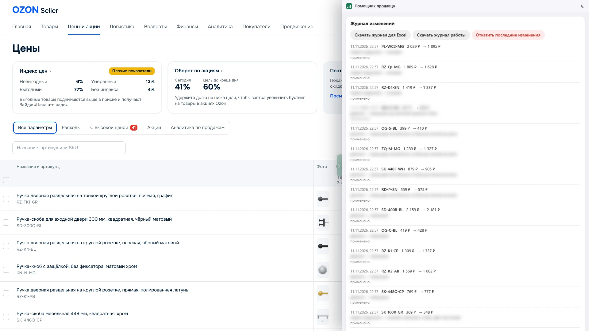
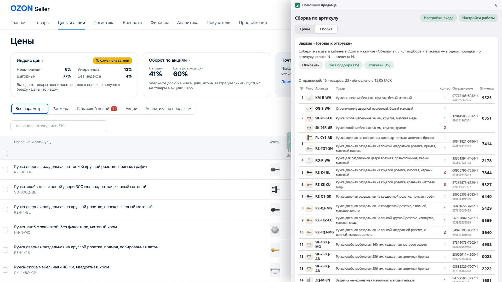
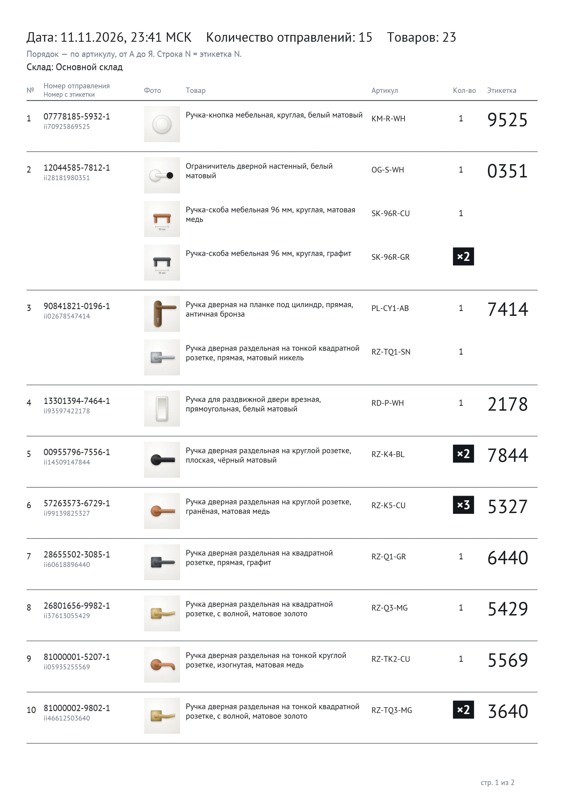

Что делает расширение
Цены по индексу. Расширение проверяет все товары по расписанию, пока открыт Chrome. Если индекс цены стал невыгодным, оно снижает цену. Если цена заметно ниже, чем у конкурентов, поднимает её постепенно.
Минимальная цена. Для каждого товара вы задаёте минимальную цену в таблице Excel, ниже неё расширение цену не опустит. Товары, которые трогать не нужно, отмечаете в той же таблице.
Акции. Когда цена снижается, расширение автоматически добавляет товар в подходящие акции маркетплейса или меняет цену в акции, где товар уже участвует.
Заказы в пути. Расширение не снижает цену товара, который уже едет к покупателю, чтобы заказ не отменили.
Два режима. Цены меняются автоматически или после вашего подтверждения. Во втором режиме вы видите список изменений с причинами и отмечаете, что применить.


Журнал и откат. Каждое изменение записывается в журнал, его можно скачать для Excel. Последнюю проверку можно откатить одной кнопкой.


Сборка FBS. Лист подбора с фото товаров и этикетки маркетплейса печатаются в одном порядке, по артикулу. Кнопка стоит прямо в личном кабинете продавца.




Как начать
Сначала пробная версия на 3 дня бесплатно.
Если результат устроит, ставим полную версию. Первые дни она работает в режиме с подтверждением. По журналу изменений видно, какие цены расширение поменяло и почему. Если какое-то правило не подходит вашему магазину, я его меняю. За эти исправления платить отдельно не нужно.
Безопасность
Расширение работает через официальный API маркетплейса. API-ключ вы создаёте в личном кабинете продавца сами, с доступом только к товарам, акциям и заказам. Ключ хранится только в вашем браузере, зашифрованный вашим паролем, и отправляется только на сервер маркетплейса. Мне и третьим лицам данные не уходят.
Что можно добавить
- Прибыль по каждому товару с учётом комиссий, логистики и себестоимости.
- Прогноз остатков и поставок FBO по кластерам.
- Контроль автоакций маркетплейса.
- Заявки «Хочу скидку»: одобрение или отказ по вашей минимальной цене.
- Проверка карточек: контент-рейтинг, ошибки модерации, неверные габариты.
- Сканирование кодов «Честного знака» при сборке.
- Уведомления, когда падает рейтинг или растёт индекс ошибок FBS.
Цена расширения зависит от того, что нужно вашему магазину. Напишите, я покажу расширение в деле и назову цену.